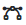

Поведенческие проверки
Проверки выполняются для хостов, интерфейсов, устройств SNMP и других сетевых элементов и настраиваются в разделе «Проверки» на левой боковой панели «Настройки».

Проверки предназначены для проверки определенных условий и, если они не выполняются, вызывают оповещение.
Типы интерфейсов
Проверки могут быть доступны как для интерфейсов ZMQ, так и для интерфейсов пакетов или только для одного из них;
Пакетный интерфейс:

ZMQ интерфейс:

Список оповещений
Ниже приведен список всех доступных оповещений, разделенных по семействам, и какая лицензия необходима для каждого из них.
- Список оповещений для каждой лицензии
- Поведенческие проверки хоста
- Поведенческие проверки интерфейса
- Поведенческие проверки локальных сетей
- SNMP Поведенческие проверки
- Поведенческие проверки потока
- Поведенческие проверки системы
- Поведенческие проверки автономных систем
- Активный мониторинг Поведенческие проверки
- Syslog Поведенческие проверки
- Поведенческие проверки хоста
- Страны Контакты
- Опасный хозяин
- DNS Наводнение
- DNS Контакты сервера
- DNS Трафик
- Контакты по доменному имени
- Поток Наводнение
- Аномалия потоков
- Внешняя проверка хоста (REST)
- Сценарий проверки пользователя хоста
- ICMP Наводнение
- NAT Обнаружено
- Контакты NTP-сервера
- Удаленное подключение
- Сканировать
- Сканирование в реальном времени
- Аномалия очков
- Порог оценки превышен
- Порт сервера обнаружен
- SMTP Контакты сервера
- SNMP Наводнение
- СИН Флуд
- Слишком много контактов хоста только для приема
- Неожиданный шлюз
- Обнаружение VPN
- Wazuh Информация изменена
- Поведенческие проверки интерфейса
- Нарушение ACL (ARP)
- Отслеживание устройства/MAC-адреса
- DHCP Шторм
- Призрачные сети
- Уведомления интерфейса сбрасываются
- Периодическая активность интерфейса не выполнена
- Интерфейс Медленная периодическая активность
- Нет экспортной деятельности
- Нет дорожной активности
- Отбрасывание пакетов
- Неожиданное поведение оценок
- Неожиданное поведение трафика
- Поведенческие проверки локальных сетей
- SNMP Поведенческие проверки
- Изменение статуса дуплекса
- Высокий уровень отказов/ошибок интерфейса
- Превышено количество ошибок интерфейса
- Монитор топологии LLDP/CDP
- Обнаружение MAC (SNMP)
- MAC-порт изменен (SNMP)
- Опер. Изменение статуса
- SNMP Перезагрузка устройства.
- Порог перейден
- Слишком много MAC-адресов на немагистральном канале
- Обнаружено изменение трафика
- Поведенческие проверки потока
- Нарушение ACL (ICMP/TCP/UDP)
- Несоответствие ALPN/SNI
- Анонимный подписчик
- Передача двоичного приложения/.exe
- Передача двоичного файла/данных (попытка)
- Контакт клиента с черным списком
- Страна в черном списке
- Поток из черного списка
- Контакт с сервером в черном списке
- Трансляция трафика, отличного от UDP
- Учетные данные в виде открытого текста
- Краулер/Бот
- Рабочий стол/Общий доступ к файлам
- DNS Эксфильтрация данных
- DNS Недопустимые символы
- Слоновый поток
- Код ошибки
- Внешнее оповещение
- Сценарий проверки пользователя потока
- Фрагментированное сообщение DNS
- Полностью зашифрованный поток
- Политика хоста
- HTTP Устаревший сервер
- HTTP Подозр. Содержание
- HTTP Подозр. Заголовок
- HTTP Подозр. URL-адрес
- HTTP Подозр. Пользовательский агент
- HTTP/TLS/QUIC Числовое имя хоста/SNI
- ICMP Эксфильтрация данных
- IEC Неверный переход команды
- IEC Неверный переход
- IEC Неожиданный идентификатор типа
- Неверный запрос DNS
- Известный прототип на нестандартном порту
- Большой пакет DNS (512+ байт)
- Долговечный
- Низкая производительность
- Неверные пакеты
- Вредоносный JA3 Fingerp.
- Вредоносный сертификат JA3 SHA1.
- С хостом вредоносного ПО связались
- Незначительные проблемы
- Несовпадение протокола с IP
- Отсутствует SNI TLS Внутренний номер
- Неверный переход ModbusTCP
- ModbusTCP слишком много исключений
- Неожиданный функциональный код ModbusTCP
- Не очищено
- Запутанный трафик
- Устаревший поток без PQC
- Устаревший хост без PQC
- Устаревшая версия или шифр клиента SSH
- Устаревшая версия или шифр сервера SSH
- Старая версия TLS
- Периодический поток
- Периодичность изменена
- Возможный трафик вывода AI
- Возможный эксплойт
- Возможное удаленное выполнение кода (RCE)
- Возможная SQL-инъекция
- Попытка зондирования
- Profinet слишком много ошибок
- Пуникодический IDN
- QoE Проблемы
- Редкое направление
- Удаленный доступ
- Небезопасный протокол удаленного доступа к локальному
- Удаленный поток к удаленному
- Рискованный АСН
- Рискованный домен
- Неверный переход S7Comm
- S7Comm Слишком много ошибок
- Неожиданный функциональный код S7Comm
- Карта сервиса Обнаружение бокового движения
- Медленный DoS
- Малый и средний бизнес небезопасен
- Подозр. Протокол устройства
- Подозр. Доменное имя DGA
- Подозр. DNS трафик
- Подозр. Энтропия
- Подозр. Сканирование домена
- TCP Проблемы с подключением
- TCP соединение отклонено
- TCP Сброс потока
- TCP Обмен данными не осуществляется
- TCP Проблемы с пакетами
- TCP Без ответа
- TCP Zero Окно
- TLS (вероятно) Не несет HTTPS
- TLS Срок действия сертификата истекает
- TLS Срок действия сертификата истек
- TLS Проблемы с сертификатами
- TLS Самоподписанный сертификат
- TLS Срок действия сертификата слишком длинный
- TLS Фатальное предупреждение
- TLS Приостановка использования ESNI
- TLS Подозр. Расширение
- TLS Необычный АЛПН
- TLS Небезопасные шифры
- Неожиданно DHCP
- Неожиданный сервер DNS
- Неожиданный NTP-сервер
- Неожиданный сервер SMTP
- Однонаправленный поток
- Неразрешенное имя хоста
- Небезопасный протокол
- VLAN Двунаправленный поток
- Веб-майнинг
- XSS-атака
- Поведенческие проверки системы
- Всегда включенные системные оповещения
- Активный мониторинг Поведенческие проверки
- Syslog Поведенческие проверки
- Поведенческие проверки автономных систем